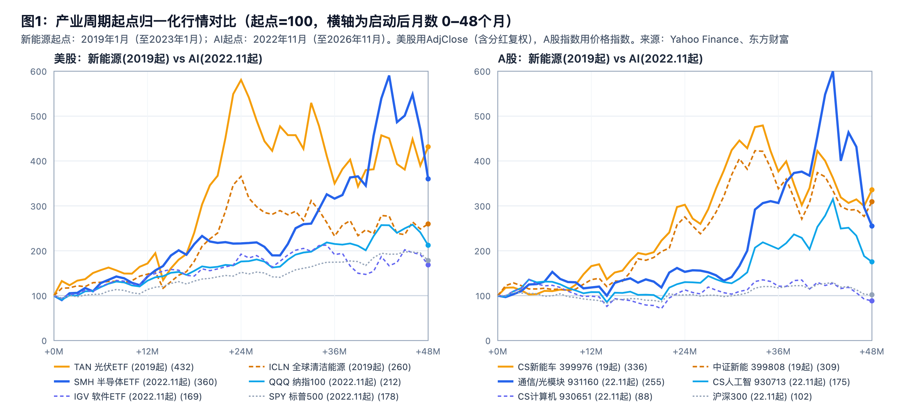
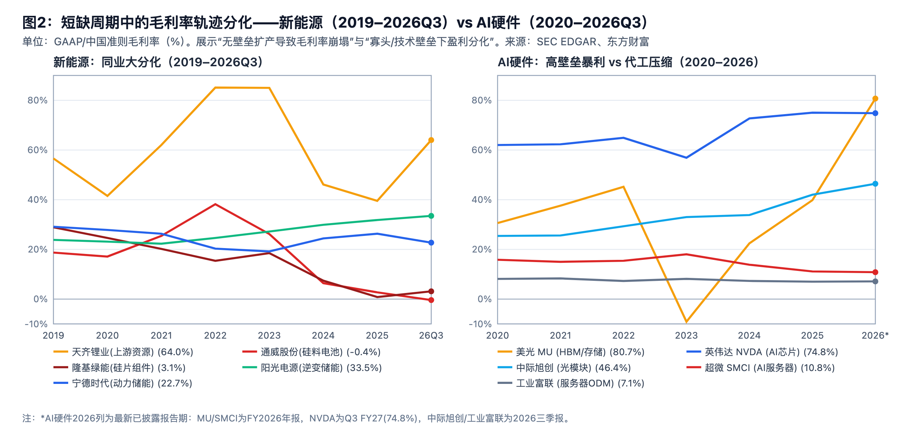
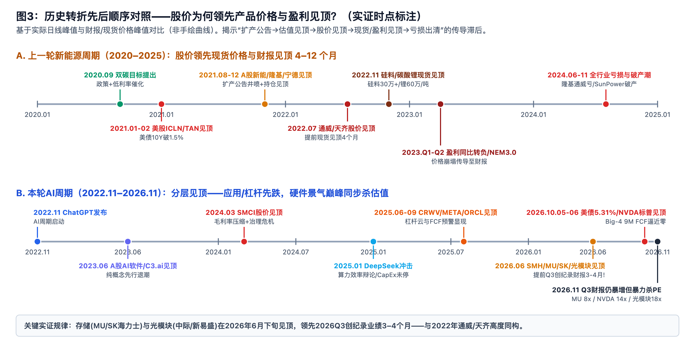
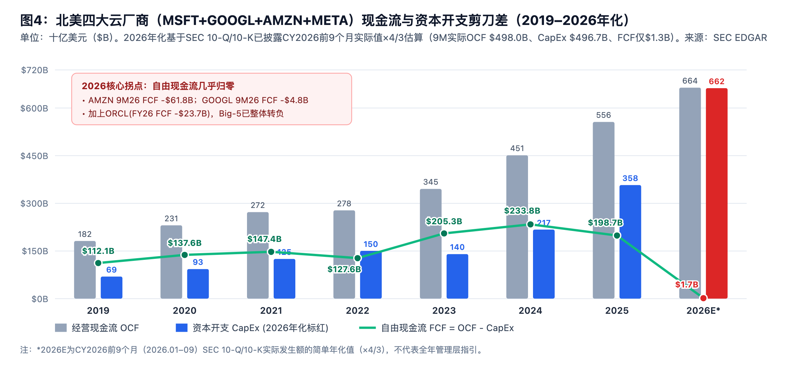
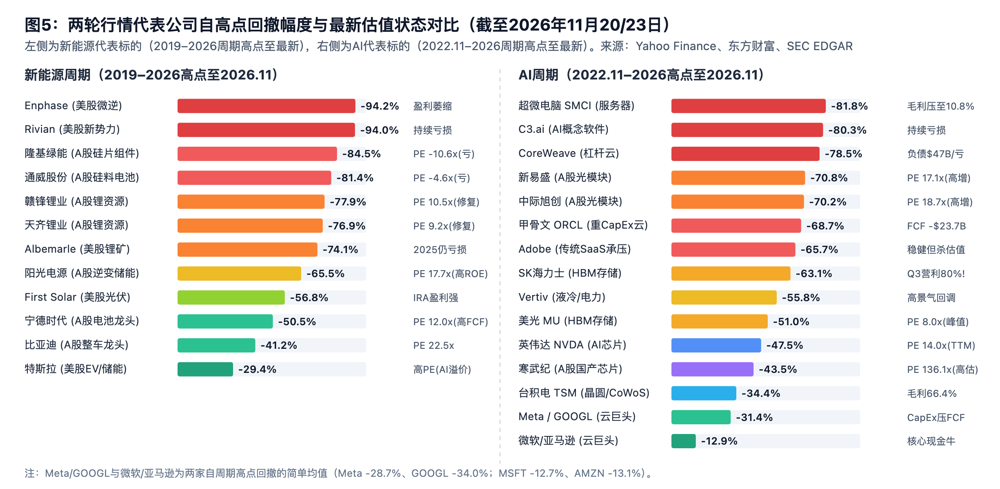

2026年11月，资本市场正在发生一件极其反直觉的事：业绩越炸裂的公司，股价跌得越狠。
英伟达刚交出单季营收1158亿美元、同比翻倍的财报，四季度指引高达1300亿美元，股价却比10月高点跌去47.5%，滚动市盈率（PE）压到只剩14倍。
美光2026财年毛利率飙到80.7%，净利润高达850亿美元，股价却早在创纪录财报公布前三个月就见了大顶，截至11月下旬腰斩至8倍市盈率。
A股同样惨烈。中际旭创和新易盛今年前九个月分别狂赚222亿和114亿元，毛利率高达46%到48%，股价却自6月下旬高点暴跌70%，市盈率回落到17至19倍。
这一幕，经历过上一轮A股和美股周期的人并不陌生。
2022年7月初，硅料龙头通威股份和锂矿龙头天齐锂业，同样在行业最赚钱、现货价还在继续狂飙的夏天，悄无声息地见了大顶。四个月后多晶硅冲上33万元一吨、碳酸锂逼近60万元，它们的股价却再也没回去过。
今天的AI，是不是正在照着上一轮新能源的剧本重演？
为了不靠感觉拍脑袋，我把2019年以来的新能源周期和2022年底以来的AI周期拉到同一张桌上，核对了中美70多个核心指数与龙头公司截至2026年11月23日的最新官方财报。
数据给出的答案非常明确：决定你未来三年盈亏的，不是站队“泡沫论”还是“信仰论”，而是看清哪三套旧剧本正在精准重演，以及哪两条硬边界让AI核心层不会重蹈中国光伏的覆辙。
一、先拆掉第一个幻觉：两轮行情，谁才是大盘真正的主角？
对照剧本之前，必须先纠正一个流传最广的误区。
很多人习惯把两轮行情划等号，说“上一轮新能源带动整个股市暴涨，这一轮AI带动整个股市暴涨”。把历史数据摊开一看，这句话在美股完全不成立，在A股也只对了一半。
先看美股。2021年是全球新能源业绩和情绪的高光年份，标普500全年大涨28.7%。但美股清洁能源ETF（ICLN）和光伏ETF（TAN）那一年分别暴跌了24.2%和25.1%，早在2021年1月和2月就见了大顶。
原因很简单：纯新能源公司在标普500里的权重不到1%，哪怕加上特斯拉，当年也远非大盘主角。推高2021年美股的是美联储零利率和综合科技平台，不是新能源。
再看A股。2021年中证新能源指数大涨49.3%，但沪深300全年反而下跌了5.2%。新能源当年真正拉动的只有创业板指（板块权重超30%，当年涨12.0%），全市场更像一场剧烈的存量风格切换。
本轮AI，才真正具备了“绑架宽基”的分量。
2023到2025年，标普500前十大公司权重一路冲到42%至43%，远超2000年互联网泡沫峰值的27%，“七姐妹”连续三年贡献了标普总回报的63%、55%和46%。
A股也一样。到了2025年，通信加电子合计占了创业板指四成以上权重，半导体占科创50七成半以上，直接把双创指数推升了36%到50%。
高权重是一把双刃剑——涨时推高大盘，跌时反向引爆。
截至2026年11月20日，代表全市场平均表现的标普等权ETF（RSP）今年稳健上涨9.59%，把标普500（+1.95%）和纳斯达克100（-0.62%）甩在身后。A股创业板指和科创50，则自今年6月下旬高点回撤了45.7%到48.8%。
把两轮周期的起点都拉齐到100，你可以直观看到两地市场和两轮主线的节奏差异：美股新能源在第24个月见顶，A股新能源在第30到34个月见顶，而本轮AI硬件一路拉升到第42个月才掉头回撤。


这给了我们第一条跨市场纪律：不要把“少数龙头权重大、拉动指数涨”，误判成“全行业基本面无敌”。
二、最精准重合的一幕：为什么最赚钱的时候，股价跌得最狠？
把两轮剧本叠在一起，最残酷、也最精准的重合点，出现在股票的定价机制上。
为什么公司营收翻倍、利润创历史新高，股价反而腰斩？
数学上，任何盈利企业的股价（）变动，永远等于每股收益和市盈率这两项变动的乘积：
翻译成人话就是：股价翻几倍，取决于“赚的钱翻了几倍”乘以“市场愿意给多少倍市盈率”。 只要市场开始怀疑你现在赚的是周期顶峰的钱，把市盈率从50倍砍到15倍，哪怕利润接下来再翻两倍，乘下来股价照样要跌掉四成。
上一轮新能源把这条铁律写成了教科书。
宁德时代是全行业公认的穿越周期赢家。2021年到2025年，它的归母净利润从159亿元干到722亿元，暴增了4.5倍，今年前三季度又赚了645亿元，账上躺着3698亿现金。
可如果你在2021年底超过80倍市盈率的高点买入，熬过四年利润暴增4.5倍的辉煌，到2025年底持股依然是亏的——因为市场把它的市盈率一路压到了12倍。
在强周期的短缺环节，市场的抢跑更加冷酷。


看看上面这张毛利率曲线，历史押韵得近乎精确。
2022年，天齐锂业毛利率冲到85.1%，净资产收益率高达80.7%；通威股份净资产收益率冲到52.4%。市场没有给它们成长股估值，反而抢在现货价格见顶前四个月，把市盈率压到了5到7倍，股价率先见顶。
四年后，同样的定价剧情在AI存储和光模块身上原样重演。
由于高带宽内存（HBM）消耗了大约三倍于普通内存的晶圆面积，2026年全品类存储极度紧缺，把美光毛利率推到了80.7%，把SK海力士三季度营业利润率推到了79.7%。
但华尔街一点面子都没给。美光和SK海力士早在今年6月下旬就见了顶，比创纪录财报整整提前了三到四个月，随后大跌51%到63%，美光市盈率直接杀到8倍。
A股光模块龙头中际旭创、新易盛同样在6月下旬提前见顶。表面看前九个月利润翻倍，但翻开三季报能看到一个刺眼信号：中际旭创、新易盛、沪电股份、工业富联四家算力龙头，前九个月存货全部暴增，自由现金流集体转负。
市场一时分不清，这批高存货究竟是为明年下一代1.6T高速光模块大单提前备料，还是见顶前的库存积压。既然分不清，资金就先用脚投票，把市盈率砍到了17至19倍。
看看下面这张两轮见顶的实证时间轴，规律一目了然：当一个硬件环节的毛利率飙升到45%至80%的反常高位时，股价永远比创纪录的财报提前三到四个月拐头。


三、引爆同款跳水剧情的三个开关
如果只是估值偏贵，牛市往往还能在高位震荡很久。
真正让2026年下半年的AI硬件从“高歌猛进”切入“剧烈出清”的，是它踩中了和上一轮新能源完全相同的三个开关：买方现金流见底、无风险利率抬头、筹码拥挤到极限。
第一个开关：北美云巨头不再是“不差钱的印钞机”
过去两年，大家之所以相信AI不怕美联储高利率，是因为微软、谷歌、亚马逊、Meta这四家买单的巨头手里握着几千亿美元净现金，利息越高，账上存款赚得反而越多。
2026年的最新财报，彻底改写了这个前提。
把美国证监会公开财报加总起来，结果出乎很多人意料：2024年，北美四大云巨头合计经营现金流4511亿美元，资本开支2173亿美元，还能净剩 2338亿美元 的自由现金流（赚到手的现金减去盖机房买芯片的钱）。
到了2026年前九个月，四家合计经营现金流涨到4980亿美元，但资本开支狂飙到了 4967亿美元。辛辛苦苦赚来的现金，几乎一分不剩地全砸进了芯片和数据中心，四家合计自由现金流断崖式跌到只剩 12.6亿美元。


拆开来看更触目惊心：亚马逊前九个月自由现金流已经是 -618亿美元，谷歌转负 -48亿美元，Meta三季度单季转负 -21亿美元。
如果把激进扩建的甲骨文（2026财年自由现金流-237亿美元）算进来，五大云厂的自由现金流已经整体深度为负。
钱不够怎么办？只能借。
2026年，五大云厂对外发债和股权融资突破了3260亿美元。云巨头为了不把债全写在明面上，还签了超过3万亿美元的数据中心长租和包电协议；连英伟达都在财报里披露了最高1180亿美元的客户信用和租约担保——一旦下游客户违约，风险会顺着担保链回流。
当AI基建从“净现金自掏腰包”变成“发债与表外融资撑盘的重资产买卖”，它就瞬间从“高利率免疫者”退化成了“高利率敏感者”。
第二个开关：无风险利率突然关闸
偏偏就在这个节点，宏观利率的闸门关上了。
2026年9月16日，美联储在新任主席凯文·沃什的主持下，以12比0全票重启加息25个基点，利率重回3.75%至4.00%。10月5日，10年期美债收益率冲破 5.31%。
第二天，标普500和英伟达同步构筑了阶段性大顶。
紧接着11月12日，黄仁勋突然辞任英伟达CEO并叠加监管核查。这类个股黑天鹅虽不是本轮见顶的起点（存储与光模块早在6月就已拐头），却把高利率下的估值折价进一步放大——在永久CEO人选与核查结论落地前，市场会持续给英伟达的14倍市盈率打上一层治理折扣。
回头看当年新能源最先崩盘的是谁？是高息加杠杆的美国户用光伏SunPower、Sunnova，以及烧光58亿美元的欧洲电池厂Northvolt。
再看今年AI最先倒下的三类公司，几乎一模一样：
- 靠高息芯片抵押债狂飙的算力租赁商 CoreWeave：背负470亿美元债务，三季度光利息就吃掉23.1%营收，无担保债收益率飙到14%至15%（债市已按快违约的高息垃圾债定价），股价暴跌78.5%；
- 激进举债扩建的 甲骨文：自由现金流转负237亿美元，股价大跌68.7%；
- 夹在上下游之间、毫无议价权的服务器组装商 超微电脑：毛利率跌到10.8%，经营现金流暴亏68亿美元，股价暴跌81.8%。
第三个开关：中美同时撞上极端筹码拥挤
上一轮A股新能源最狂热的2022年二季度，主动权益公募基金在电力设备上的重仓占比峰值是16.3%到17%。
到了2026年二季度，A股主动公募在电子加通信上的仓位历史性冲破了 58%到61%——是当年新能源峰值的三倍多。全市场两融余额也在5月创下了2.83万亿元的新高。
美股同样挤爆了。今年7月美国银行全球基金经理调查中，创纪录的82%基金经理把“做多全球半导体”选为最拥挤交易，美股融资余额（相当于美股的两融）在6月创下1.502万亿美元的历史极值。
到了11月，情绪瞬间踩踏：全球基金经理单月疯狂减仓科技股，创下2006年以来20年最大撤退纪录。
一边是买单的人现金流见底，一边是美债利率飙过5.3%，再叠加上场内人手满仓、无人接盘。 2026年下半年这场剧烈回调，本质上是三个开关同时引爆的结果。
四、但AI不会简单重演中国光伏：两条硬边界，和一个伪命题
看到这里，最容易滑向的结论是：既然剧本这么像，那AI接下来是不是也要全行业亏损三年？
且慢。如果照搬中国光伏剧本去套AI全产业链，很可能会犯下和当年盲目追高一样严重的错误。先把最核心的结构差异摆在一张表里：
| 比较维度 | 上一轮中国晶硅光伏（2021–2026） | 本轮AI核心瓶颈（2023–2026） |
|---|---|---|
| 扩产速度 | 硅片组件6–12个月、硅料18–24个月 | 先进晶圆、高带宽内存、美国电网需3–5年以上 |
| 供给格局 | 数十家跨界民企蜂拥，产能达需求2.2–2.5倍 | 台积电独家、存储三寡头、欧美燃机电网高度垄断 |
| 融资约束 | A股连三年1.7万亿股权融资+地方信贷兜底 | A股827新政已封堵跨界抽血；美股靠云巨头与债市 |
| 盈利底盘 | 2024–2026Q3光伏四龙头合计亏796亿元 | 北美四大云同步再加速，头部模型与广告/编程已盈利 |
硬边界一：供给壁垒的厚度完全不在一个量级
中国晶硅光伏之所以惨烈到通威、隆基、TCL中环、晶澳四大龙头近三年累亏796亿元，核心原因就是太容易扩产。2020到2022年，连做牛奶、做玩具、做服装的公司都能靠定增跨界建光伏厂，把全球组件产能干到超过1500吉瓦。
但在AI最核心的瓶颈环节，光靠砸钱根本买不来产能。
最上游的2纳米晶圆和先进封装，台积电几乎独家垄断，今年三季度毛利率高达66.4%，营业利润率58.7%；高带宽内存全球也只有SK海力士、美光、三星三家能做。
更底层的美国电网更是硬卡点：高压变压器交期超过160周，全美并网排队项目高达2061吉瓦——超过了全美现有的总发电装机容量，平均等待超过5年。
再看扩产的钱袋子，中国资本市场自身也变了。2023年“827新政”和“新国九条”之后，A股封堵了跨界概念股定增抽血的通道，2024年全A股权融资额跌破3000亿元。
这意味着，AI里的服务器组装和同质化算力租赁会重演光伏的价格战，但台积电、核心芯片、存储三寡头和北美电力设备，极难重演“全行业跌破现金成本连亏三年”的绝境。
不过有一个反证必须盯紧：三星今年三季度已借新一代HBM4强势反攻，三寡头内部抢份额仍可能把存储80%的暴利拉回常态。
硬边界二：终端商业化已跑出真盈利，不是纯空气
过去两年质疑AI最多的声音是：“下游根本没赚到钱，全是云巨头左手倒右手。”
2026年下半年的数据，至少证伪了“纯空气”这个极端判断。
首先，北美四大公有云在合计年化收入超过4700亿美元的体量上，今年三季度增速全部不降反升：亚马逊云同比增长39.3%，微软云涨48%，谷歌云暴涨103%，甲骨文云涨121%。
其次，前沿模型商交出了第一份经审计的盈利答卷。今年11月上市的Anthropic在招股书里披露，今年二季度单季营收116亿美元，并按最严格的美国会计准则（没玩调整口径、扣完股权激励）首次实现9.74亿美元营业利润。
应用层也在跑出大单品：Meta的AI广告工具Advantage+年化收入突破750亿美元，AI编程工具Cursor达到40亿美元，Palantir今年营收增速飙升至96%。
但先别急着乐观，另一组数据同样刺眼。
五大云厂加上CoreWeave手握超过2.6万亿美元的积压订单，这里面存在严重的“循环记账”——巨头投资模型公司，模型公司转身把钱签成云算力长单，光Anthropic一家就签了7800亿到9010亿美元的跨云算力承诺。
与此同时，OpenAI仍处于每年烧钱约两百亿美元的巨额亏损中，麦肯锡和麻省理工的调研也显示，大多数传统非科技大企业的AI试点还没转化成财报里的利润。
所以准确的定性是：AI终端需求是真的，且头部已经验证盈利闭环，只是它当前的体量和增速，暂时还跑不赢云巨头一年砸下7500亿美元资本开支的速度。
顺手戳破一个伪命题：“AI缺电”救不了中国光伏
市场还流行一种逻辑：AI耗电巨大，所以新能源将迎来第二春。这句话只对了一半，而且恰恰最容易让A股投资者踩坑。
国际能源署测算，2024到2030年，全球数据中心耗电只占全球新增总用电量的不到10%。在中国，去年全社会用电量高达10.37万亿度，是美国的两倍多，算力中心用电仅占 1.6%，电网完全游刃有余。
真正严重缺电的只有美国。数据中心将贡献2030年前美国近一半的新增电力需求，覆盖美国核心数据中心区的最大电网PJM，备用兜底供电价格（容量拍卖价）两年暴涨了11.5倍。而且AI要的是7×24小时不断电的稳定电源，不是看天吃饭的间歇性发电。
所以这波美国缺电红利，真正把钱装进兜里的只有四类公司：
- 欧美重型燃机与电网寡头：通用电气分拆出的GE Vernova（订单积压1970亿美元）与西门子能源（1640亿欧元）；
- 美国本土核电与气电厂：如重启三里岛核电站供电给微软的Constellation；
- 快速供电的燃料电池：如能两三个月投产的Bloom Energy；
- 公用事业级大储：特斯拉储能业务三季度毛利率达33.1%，大储爆发还拉动了今年全球约三分之一的锂需求，帮赣锋锂业和天齐锂业扭亏为盈。
至于产能过剩、又被美国关税和排华法案挡在门外的中国晶硅光伏？AI的电力红利，几乎一滴都没流进它们的利润表。
五、按周期时钟分幕：今天的AI，早已裂成五个世界
按上一轮新能源的时钟，今天AI到底走到2021年还是2022年了？
把所有AI股票塞进同一个时间刻度，是亏钱的开始。截至2026年11月23日，AI产业链内部早已劈裂成了五个截然不同的世界。


先把这五个世界装进一张手机一屏就能截完的坐标表里：
| 产业链分层 | 代表公司 | 像新能源的哪一年 | 经营现状 vs 估值核心矛盾 |
|---|---|---|---|
| 一、出清深水区 | 超微电脑、CoreWeave、纯概念软件 | 2024年破产出清期 | 跌78%–82%，低毛利组装或高息短债错配，最先倒下 |
| 二、景气顶杀估值区 | 美光、SK海力士、中际旭创、新易盛、英伟达 | 2022年7月通威/天齐 | 业绩暴增但跌48%–71%，市盈率杀至8–19倍，谨防伪低估值 |
| 三、经营反转高估区 | 寒武纪、海光信息 | 2021年底百倍估值龙头 | 受益国产替代扭亏为盈，但寒武纪136倍市盈率极度透支远期 |
| 四、压舱石与折旧大考区 | 台积电、微软、亚马逊、谷歌 | 穿越周期龙头（宁德式） | 护城河深、最抗跌（-13%至-34%），但云巨头面临折旧墙 |
| 五、长期饭碗动摇区 | Adobe、Salesforce | 无直接对标（AI独有） | 当期现金流稳健，但AI代理动摇“按席位收费”的长期预期 |
这里面，有三个最容易踩坑、也最值得多看两眼的细节：
细节一：警惕“8倍美光、18倍光模块”里的伪低估值陷阱
按现在的股价倒算未来十年现金流，市场其实已经悲观到极致：当前市值只隐含美光未来十年每年增长 1.1%（几乎当它不增长了），只隐含中际旭创每年涨 6.1%，英伟达（14倍市盈率）也只隐含 6.5%到12.3%。
但千万别看到个位数和十几倍市盈率，就闭着眼睛冲进去抄底。
当年无数人在通威、天齐跌到5至7倍市盈率时抄底惨套，踩的就是**“周期顶高毛利制造的伪低估值陷阱”**。
上面的倒算，都是基于2026年利润极端高位算出来的。一旦2027年美光毛利率从80%回落到正常的40%，或者光模块毛利率从47%回落到30%，利润缩水一半，今天的8倍和18倍瞬间就会变成16倍和36倍。
看这类强周期硬件股，不能看今年高毛利算出来的静态市盈率，必须按“正常化毛利率”打折重算。
至于A股光模块为什么比美股英伟达提前三个月见顶、跌得更狠（-70% vs -47.5%），除了存货担忧，更源于两地定价机制差异——A股受60%公募抱团、缺乏做空对冲和边际增速变化驱动，涨跌弹性天然远大于看重现金流与利率的美股。
细节二：国产算力的高估值消化期有多长？
受益于出口管制划出的内需市场，寒武纪终于扭亏为盈，2025年赚了20.6亿元，今年前三季度赚了37.2亿元。但回调43.5%之后，它现在的滚动市盈率依然高达 136倍。
按现价倒算，这个市值要求它未来十年每年保持 31.5%以上 的利润复合增长，并把目前仍为负的自由现金流全部转正。2021年底买在百倍估值的宁德时代已经演示过：哪怕公司真做成了行业第一，买错起始价格，股东也要忍受极其漫长的消化期。
细节三：云巨头躲不掉的会计定时炸弹——折旧墙
台积电（回撤34%）手握先进制程垄断权，微软、亚马逊（回撤仅13%）坐拥企业生态底座，是全行业最稳的压舱石。
但对云巨头来说，眼前横着一颗绕不开的定时炸弹——折旧墙。
过去几年，微软、谷歌、Meta把服务器会计折旧年限从3到4年拉长到了5到6年。可英伟达芯片每代升级，每瓦算力吞吐量跃升10倍以上，老卡在缺电的机房里很快就不划算。亚马逊2025年已经率先把部分AI服务器折旧从6年缩回5年。
算一笔硬账：假设云厂手里有 的算力资产池，如果技术迭代逼得它把折旧年限从 缩短到 ，每年多吃掉的利润就是：
翻译成人话就是：每砸下5000亿美元买芯片服务器，按6年折旧每年吞掉833亿美元利润；一旦被迫缩回4年，每年折旧跳到1250亿美元——凭空多出417亿美元的利润黑洞。
更可怕的是“滞后滚雪球效应”。买芯片花现金是一次性的，折旧却是连着四到六年一层压一层叠进利润表。2024到2026年砸下的上万亿美元资产，就算明年云巨头踩刹车不买卡了，折旧仍会在2027至2028年集中炸进损益表。
微软的年折旧已经从2023财年的110亿美元飙升到今年的 343亿美元，相当于直接吃掉了它一年净利润的四分之一强。这堵墙，才刚刚开始显形。
至于第五类的Adobe（回撤66%）和Salesforce（回撤超50%），它们眼下的现金流依然漂亮，却遭遇了AI时代独有的重估——AI代理正在动摇“按人头收软件席位费”的长期饭碗。只要十年后生意还能不能活下去的长期预期动摇，估值照样腰斩。
六、别猜顶底日期，盯紧这四个领先信号
回看上一轮新能源，2020年底看到宁德时代100倍市盈率就喊泡沫的人，踏空了2021年一整年翻倍的主升浪；2024年夏天急着做空AI的人，也在随后两年亏得怀疑人生。
过早下车会踏空主升浪，盲目死扛会腰斩套牢。真正有效的做法，不是去神算精确的顶底日期，而是盯紧四个领先于财报的仪表盘：
1. 北美四大云厂的季度自由现金流，和2027年资本开支指引。
这是决定全产业链景气的总闸门。如果明年上半年四家合计季度自由现金流能重回300亿美元以上，同时云收入守住30%以上增速，2026年下半年就只是一次中场洗盘。
反过来，只要有两家以上云巨头在财报会上正式下调资本开支绝对额，上游硬件链就会从“抢产能”瞬间切入“断崖式砍单”。
2. 美国10年期国债收益率，和算力租赁商的发债利率。
2026年之后，AI基建已经深度绑定债市。10年期美债能不能回落到4.3%以下，决定了估值压制能不能解除。
更要盯紧CoreWeave这类高负债算力租赁商的发债利率（目前14%至15%）和甲骨文的信用评级——债主愿不愿意继续借钱，往往比股票市场更早拉响流动性断裂的警报。
3. 高带宽内存合约价，和A股光模块龙头的存货去化。
内存合约价是由涨转平还是调头向下，决定美光8倍市盈率是错杀黄金坑还是周期陷阱。
中际旭创、新易盛前九个月暴增的几百亿存货，能不能在明年上半年顺利转化成回笼现金、同时守住40%以上毛利率，则直接决定它们是高景气备料还是重演2023年光伏积压噩梦。
4. 传统大企业的真实AI账单，和英伟达的治理落地。
光靠云厂互投和模型商烧钱，撑不起每年砸几千亿、连砸十年的重资产投入。只有看到Anthropic上市后盈利持续扩大、更多非科技大企业在财报里拿出AI带来的真实利润增量，资本开支的闭环才算真正合上。
同时，英伟达永久CEO人选和监管核查何时靴子落地，将直接决定14倍市盈率里的治理折价何时修复。
写在最后
把新能源七年的兴衰和AI四年的狂飙并排摊开，背后反复上演的，其实只有一条极其朴素的规律。
光伏和电动车在技术降本和改变世界上大获全胜，却摧毁了绝大多数中游制造股的股东财富；而2026年下半年的AI硬件再次证明，哪怕一家公司把利润干到历史之巅，只要买在买方现金流见底、利率抬头和全民满仓的交叉口，照样要承受腰斩以上的剧痛。
好消息是，经过近五个月的剧烈出清，市场已经在替我们把最危险的泡沫挤掉了一大半。
请记住两轮周期留给投资者最贵的一句话：
技术成功、公司成功和股票回报，永远是三张彼此独立的考卷——技术红利终将属于全社会，而二级市场的超额回报，只留给在恐慌中用合理价格买下真壁垒的人。
数据截止日：2026年11月23日。本文基于跨中美市场深度研究报告提炼，原始财务与行情数据来源于美国证监会（SEC EDGAR）、东方财富/巨潮资讯、Yahoo Finance、美联储（FRED）、国际能源署（IEA）、劳伦斯伯克利国家实验室（LBNL）、PJM及美银全球基金经理调查（BofA FMS）。
免责声明：本文仅用于历史周期机制比较与投资研究学习，不构成任何具体证券的买卖建议，亦不预测精确市场顶部。